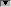
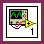

Requires: Base Development System
Select View»VI Hierarchy to display this window.
Use this window to view the subVIs and other nodes that make up the VIs in memory and to search the VI hierarchy. This window displays all open LabVIEW projects and targets, as well as the calling hierarchy for all VIs in memory. The VI Hierarchy window displays the following items:
The VI Hierarchy window displays a top-level icon to represent the main LabVIEW application instance, under which appear all open objects that are not part of a project or are not part of the application instance for a project. If you add a project, the VI Hierarchy window displays another top-level icon to represent the project. Each target you add appears under the project.
The VI Hierarchy window toolbar includes the following buttons:
| Actual Size—Displays the hierarchy at its original size. | |
| Fit to Window—Resizes the hierarchy to fit the current size of the VI Hierarchy window. | |
| Vertical Layout—Arranges the nodes from top to bottom, placing roots at the top of the layout. | |
| Horizontal Layout—Arranges the nodes from left to right, placing roots on the left side of the layout. | |
| Redo Layout—Repositions the hierarchy nodes after you expand, collapse, or move nodes. | |
| Group Libraries—Arranges the nodes into groups according to the libraries the nodes belong to. | |
| Include VI Lib—Includes VIs in labview\vi.lib in the hierarchy layout. | |
| Include Globals—Toggles the hierarchy layout to include or exclude global variables. | |
| Include Type Definitions—Toggles the hierarchy layout to include or exclude type definitions. | |
|
Edge Style—Allows you to select either Straight Line or Round Orthogonal edge style for the lines that connect items in the VI Hierarchy window. |
 | Note The VI Hierarchy window is a dynamic view of what is in memory. If you rearrange items in the hierarchy, LabVIEW does not save the new position of items. When you close and reopen the VI Hierarchy window, the positions regenerate. |
The following elements appear in the VI Hierarchy window:
| There are callers that are not shown. Right-click the node and select Show All Callers to see the callers for that node. | |
| The VI is currently suspended. | |
| The VI is configured to suspend when called. | |
| The VI is currently running. The green arrow appears on the block diagram when you have turned on execution highlighting. | |
| The VI is currently paused. Pausing temporarily stops the execution of a VI. | |
| The VI is configured to pause when called. Pausing temporarily stops the execution of a VI. | |
| There are subVIs that are not shown. Click the red arrow to view subVIs. | |
|  | All subVIs are shown. Click the black arrow to hide subVIs. |
| LabVIEW detects a recursive cycle. Each of these VIs calls the other VI in a cycle. | |
| One or more recursive calls to this VI is not being shown in the VI Hierarchy window. One or more callers exist below this node in the hierarchy. | |
| This VI calls one or more VIs recursively. LabVIEW is unable to show these connections. One or more subVIs exist above this node in the hierarchy. | |
| (MathScript RT Module) The .m file you reference from a MathScript Node might change the MathScript search path list at run time or might introduce new variables at run time. | |
|  | The VI from which you select View»VI Hierarchy is highlighted. |